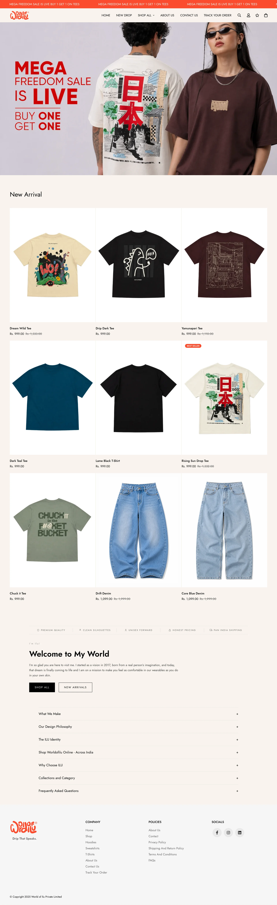

World of Ilu
A bold, contemporary streetwear and urban apparel e-commerce storefront. Engineered with clean minimalist aesthetics, new drop release mechanisms, and lightning-fast mobile purchasing.
The Challenge
World of Ilu needed a digital fashion storefront that matches their urban, hype-driven aesthetic. The brand required a smooth experience for high-traffic collection drops (tees, hoodies, denim, and oversized apparel) with instant inventory feedback and effortless mobile checkout.
The Solution
We built a sleek, minimalist Shopify storefront featuring high-impact visual lookbooks, instant size-selection drawers, streamlined collection grids, and high-speed payment integration designed for fashion consumers on the move.
Key Engineering Features
Specific architectures built to solve World of Ilu's unique business requirements.
Drop Merchandising
Dynamic product drop banners, lookbook integration, and categorized grids for limited apparel drops.
Mobile-First Experience
Engineered for effortless one-thumb mobile browsing, fast image carousel swipes, and sticky quick-add triggers.
Slide-Out Cart Flow
Instant slide-out cart drawer with real-time stock indicators and frictionless multi-payment support.
Live Platform Preview
